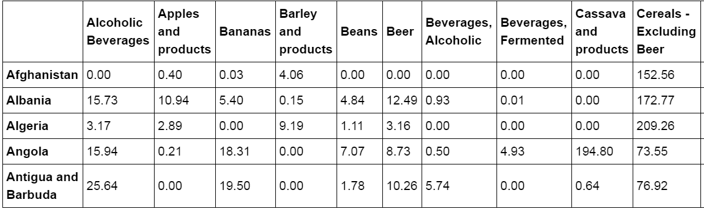
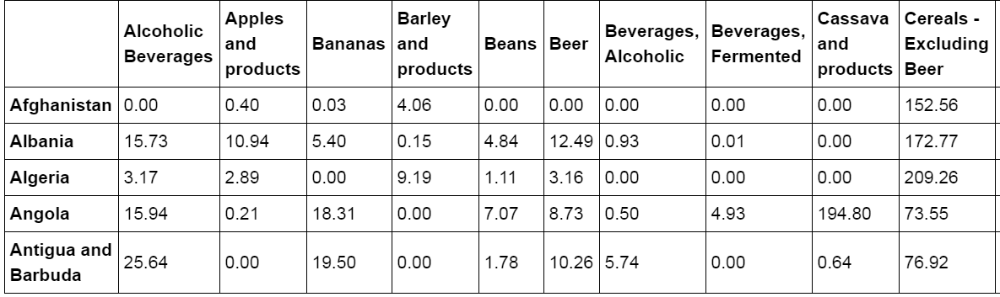
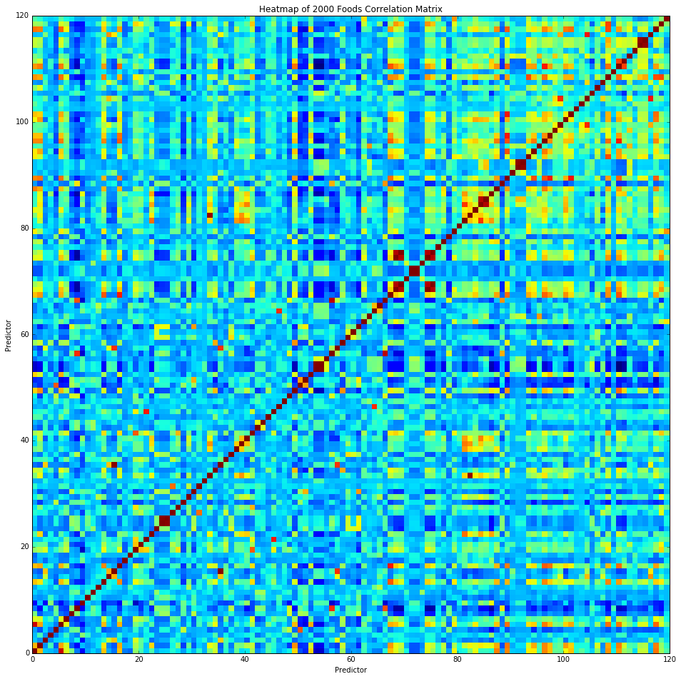

Databases
Overview
Historical food consumption data was obtained from the Food and Agriculture Organization of the United Nations' data repository. Datasets for non-meats and meats were obtained separately. Disease mortality data was obtained from the Global Health Observatory data repository. Food con- sumption data was collected by year and ranged from 1961 to 2013. There were 120 food groups ranging from "Alcoholic Beverages" to "Whey."
We first read in data for non-meat food group consumption rates by country. As the data downloaded from the the World Health Organization's Global Health Observatory Data Repository (WHO) had many elements (e.g. "Item Code") which we didn't need, we first "washed" the data to get non-meat food group consumption rates (kgs per capita) for each country. For this particular case, we looked at non-meat food group consumption rates in the year 2000, though (as we will implement later on) we can get food consumption rates for a range of years. We followed the same procedure to get meat product consumption rates by country (kgs per capita) for the year 2000. The following images show some of the data obtained from both the non-meat and meat datasets respectively. We combined these two dataframes to get a "dinner" dataframe with all our data.
 The following figure displays a heat map showing correlation between all of the 120 food groups studied in a given year (2000). Red squares indicate strong correlation while blue squares indicate little to no correlation. This map provided an initial viewpoint for us to see if there were any groups of signi cantly correlated foods based on their consump- tion rate. The heatmap suggests all the food groups appear to be relatively uncorrelated with each other, while correlated food groups are from similar \categories" (e.g. fruits). This implies we can proceed with creating a model with relative certainty that food group correlation will not bring us erroneous results. Still, this feature warrants future consideration over other years.
